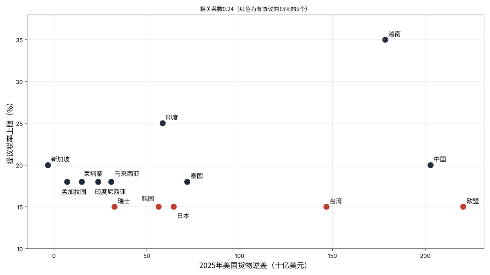
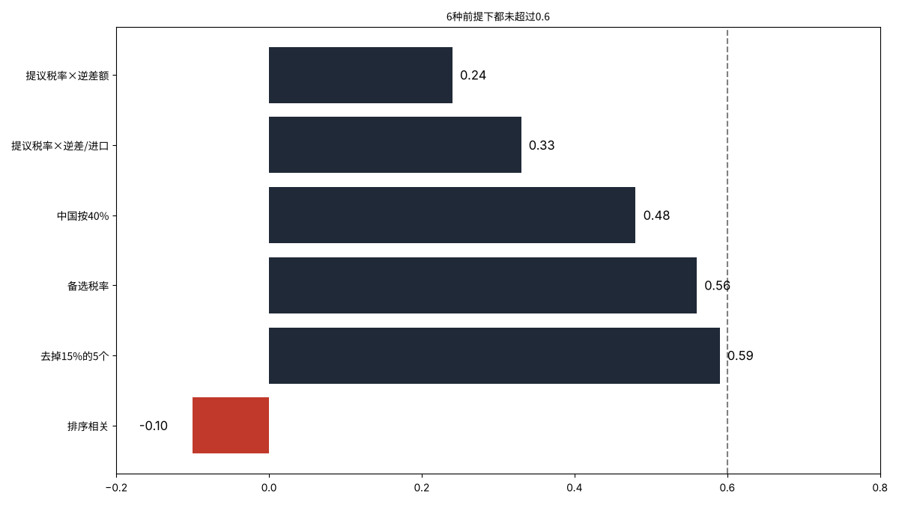

美国新关税方案：日本最高15%，越南35%。对14个经济体的税率是按对美逆差大小决定的吗？——用USTR方案和美国人口普查局2025年数据检验
美国贸易代表办公室（USTR）于11月25日公布了对日本、中国、欧盟等14个经济体的新关税方案。日本最高15%，越南最高35%，中国最高20%。
方案给出的理由是对方的“结构性产能过剩”。若是如此，美国逆差越大的对象，税率理应越高。
本文的问题是：提议税率与美国对各经济体的贸易逆差大小，究竟对应到什么程度？
- 14个经济体的提议税率与2025年对美逆差的相关系数只有0.24，逆差大小几乎解释不了税率。
- 税率为15%的5个经济体（欧盟、日本、韩国、瑞士、台湾）的逆差从325亿美元到2,204亿美元，相差约6.8倍；而美国对其有顺差的新加坡却被提议20%。
- 区分税率的，与其说是逆差大小，不如说是是否已有协议或框架。日本的15%与去年协议的水平相同。

问题与背景
先统一用语。美国《贸易法》第301条授权总统对外国的不公平做法采取措施。本次方案是依据第301条(b)款作出的认定。
货物贸易逆差，是指美国从某国进口的货物金额超过向该国出口的部分。本文只讨论货物，不含服务。
既然方案以“产能过剩”为理由，那么对美国出口远多于进口、也就是美国逆差越大的对象，税率越高才算合理。
另一方面，美国在2025年与许多国家签订了关税协议或框架，USTR也表示本次方案考虑了这些协议。税率是由逆差决定还是由协议决定，只要把数字并列就能检验。
数据与方法
税率采用USTR于11月25日公布方案中的上限值，并与律师事务所贝克·麦坚时整理的清单核对。中国上限为20%，另有40%的备选方案。
逆差采用美国人口普查局公布的2025年全年分国别货物贸易数据。逐一取出出口、进口和差额，统一换算为十亿美元。
比较方式有两种：一是逆差金额本身，二是逆差除以进口额的比率。用比率可以部分消除国家规模的差异。
两者的关系用相关系数表示。相关系数介于−1到1之间，越接近1，代表“逆差越大税率越高”的关系越强；接近0则几乎没有关系。
结果
| 经济体 | 提议税率（上限） | 备选 | 2025年对美逆差 | 逆差÷进口 |
|---|---|---|---|---|
| 欧盟 | 15% | 20% | 2,204亿美元 | 35% |
| 中国 | 20% | 40% | 2,027亿美元 | 66% |
| 越南 | 35% | — | 1,783亿美元 | 92% |
| 台湾 | 15% | 25% | 1,466亿美元 | 73% |
| 泰国 | 18% | 25% | 717亿美元 | 79% |
| 日本 | 15% | 20% | 644亿美元 | 44% |
| 印度 | 25% | — | 584亿美元 | 56% |
| 韩国 | 15% | 25% | 564亿美元 | 45% |
| 瑞士 | 15% | 20% | 325亿美元 | 31% |
| 马来西亚 | 18% | 25% | 308亿美元 | 52% |
| 印度尼西亚 | 18% | 25% | 238亿美元 | 69% |
| 柬埔寨 | 18% | 25% | 149亿美元 | 97% |
| 孟加拉国 | 18% | 20% | 71亿美元 | 75% |
| 新加坡 | 20% | — | 美国顺差34亿美元 | — |
美国对这14个经济体的货物逆差合计11,046亿美元。2025年美国货物逆差总额为12,409亿美元（国际收支口径），口径不同不能简单相比，但这14个经济体占了大部分。
然而，提议税率与逆差金额的相关系数只有0.24。改用逆差除以进口的比率，也只有0.33。逆差大小能解释的部分非常有限。

最清楚的是税率15%的5个经济体。欧盟逆差2,204亿美元，瑞士325亿美元，相差约6.8倍，税率却同为15%。这5个对象都已与美国签订了关税协议或框架。
也有相反的例子。新加坡是14个对象中唯一一个美国有顺差（34亿美元）的经济体，但提议税率仍为20%，高于逆差1,466亿美元的台湾的15%。
税率最高的是越南的35%，逆差1,783亿美元，逆差占进口比率高达92%。这一国的逆差与税率是对应的。但方案对越南、印度和新加坡都写明，若达成协议可降低税率。
此外，2025年逆差创纪录达1,969亿美元的墨西哥，不在这14个对象之中。如果逆差大小是选定标准，它理应最先被点名。
敏感性分析
为确认结果是否受前提影响，本文把前提改变6种方式进行检验。

改用备选税率（日本20%、韩国25%等）后，相关系数升至0.56，因为备选方案对有协议的国家也给出了较高税率。把中国设为备选的40%，则为0.48。
去掉有协议的5个15%经济体，只看剩下的9个，按金额为0.59，按比率则降到0.20。用排序相关（斯皮尔曼）计算为−0.10，关系反而消失。
无论哪种前提，相关系数都没有超过0.6。“逆差越大税率越高”的解读，即使改变前提也不会变强。
讨论
也有相反的看法：USTR给出的理由是产能过剩而非逆差，所以逆差与税率不对应是理所当然的。若按国家比较产能指标，或许会看到别的对应关系。
数据也有局限。逆差只是2025年一年的数据，不含今年的变化。方案中的税率是上限，实际税率要扣除现有关税后决定。最终税率预计在2027年1月25日听证会之后确定。
检验的标准有两个。一是最终方案是否只提高没有协议的国家的税率；二是2027年1月10日中美休战到期后，中国的税率是否从20%走向40%。只要其中一项发生，“税率由是否有协议决定”的解读就会更有力。
结论
14个经济体的提议税率与对美逆差大小几乎不对应。相关系数为0.24，在6种前提下也都未超过0.6。
区分税率的，更可能是是否与美国有协议或框架。有协议的5个经济体都在15%，而被要求达成协议的国家，方案中写明了降税的路径。
我是这样看的
我在日本，不会因为关税的新闻改变账户的配置。日本的15%与去年协议水平相同，并不意外。我的实业（餐厅、不动产、共享办公室）不做进出口，几乎不受关税影响。
我的海外股票以美元持有。看到关税数字时，我先把它和上一次协议的上限相比。只要在上限之内，就不是调整配置的理由。
参考文献
- 米国通商代表部（USTR）「Section 301 proposed actions on structural excess capacity（14 economies）」2026年11月25日 https://ustr.gov/about-us/policy-offices/press-office/press-releases
- 米国勢調査局「Trade in Goods with Japan（2025）」2026年 https://www.census.gov/foreign-trade/balance/c5880.html
- 米国勢調査局「Trade in Goods with China（2025）」2026年 https://www.census.gov/foreign-trade/balance/c5700.html
- 米国勢調査局「Trade in Goods with European Union（2025）」2026年 https://www.census.gov/foreign-trade/balance/c0003.html
- 米国勢調査局「Trade in Goods with Vietnam・Taiwan・Thailand・Korea・Switzerland・India・Malaysia・Indonesia・Singapore・Cambodia・Bangladesh（2025）」2026年 https://www.census.gov/foreign-trade/balance/index.html
- 米国経済分析局（BEA）・米国勢調査局「U.S. International Trade in Goods and Services, December and Annual 2025」2026年2月19日 https://www.bea.gov/news/2026/us-international-trade-goods-and-services-december-and-annual-2025
- 米国経済分析局（BEA）「Annual 2025 highlights（trad1225annual-hist）」2026年2月 https://www.bea.gov/sites/default/files/2026-02/trad1225annual-hist.pdf
- Baker McKenzie「US USTR proposes Section 301 tariffs on 14 economies over structural excess capacity」2026年11月25日 https://globalimportblog.bakermckenzie.com/2026/11/25/us-ustr-proposes-section-301-tariffs-on-14-economies-over-structural-excess-capacity/
- ABEMA TIMES「米、日本など14カ国・地域に新関税案」2026年11月26日 https://times.abema.tv/articles/-/10292285
图表由YUKI CAPITAL制作。顶部图片来自Unsplash。本文是作者本人的记录，不构成投资建议。
每天的数字和判断，我都记录在X上。